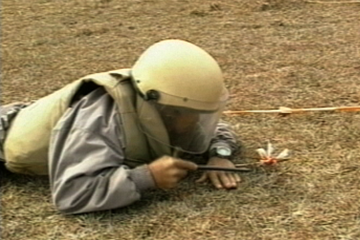
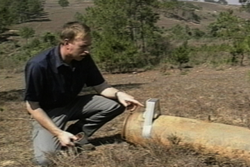

Detection and Removal
Laotians are trained in detecting, marking and clearing UXOs.
Play 2:30

Explosive Remedy
At times, large munitions are discovered. Explosives are then used to detonate the bomb.
Play 2:30

Warning a Village
Often, UXOs are detected in highly visible and populated areas. In these cases, local residents must be evacuated.
Play 2:30